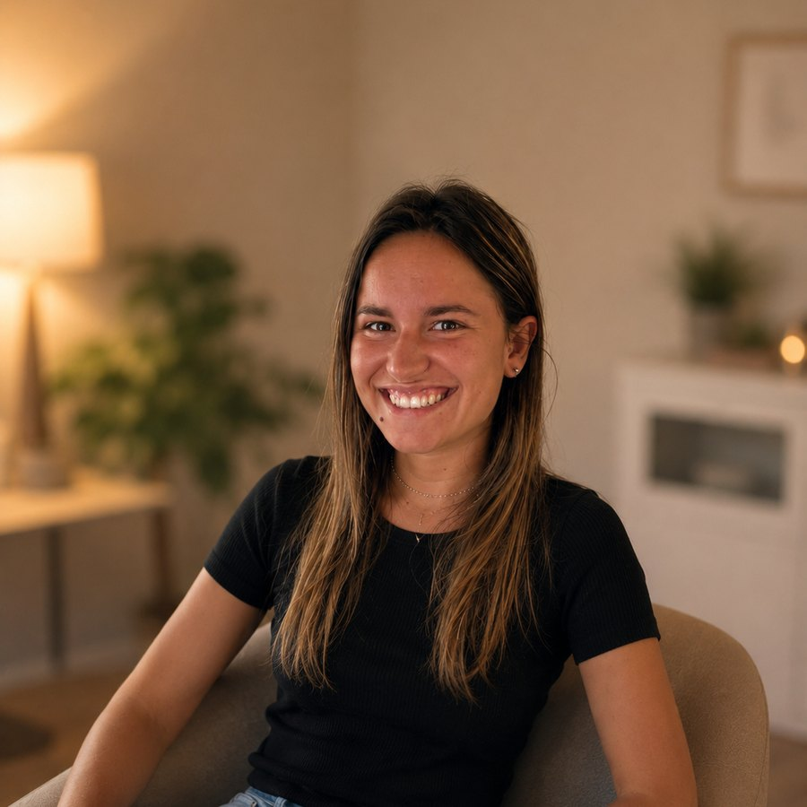

El cuerpo también habla
La ansiedad y la tensión se instalan en la respiración, en los hombros, en el sueño. Trabajarlas solo desde la palabra deja fuera la mitad.
Terapia donde el cuerpo también entra en la sesión. Psicología y yoga terapéutico, como parte de un mismo proceso.
20 minutos, sin compromiso. No hace falta diagnóstico ni saber qué te pasa.

El yoga terapéutico no es una actividad aparte: es parte del mismo proceso.
La ansiedad y la tensión se instalan en la respiración, en los hombros, en el sueño. Trabajarlas solo desde la palabra deja fuera la mitad.
Respiración, meditación y visualización que puedes usar un martes por la mañana, cuando la sesión queda lejos.
No es una clase de yoga con vocabulario terapéutico: es psicoterapia, con formación específica en yoga inclusivo y mindfulness.
Psicoterapia individual donde el trabajo psicológico y el corporal van de la mano.
La misma metodología, centrada específicamente en la ansiedad.
Sesión personalizada con meditación integrada. No hace falta experiencia previa.
Grupos de máximo 8 personas, online o presencial. Dirigido por una psicóloga.
Veinte minutos, gratis y sin compromiso. No necesitas saber qué te pasa.
Escribir por WhatsApp